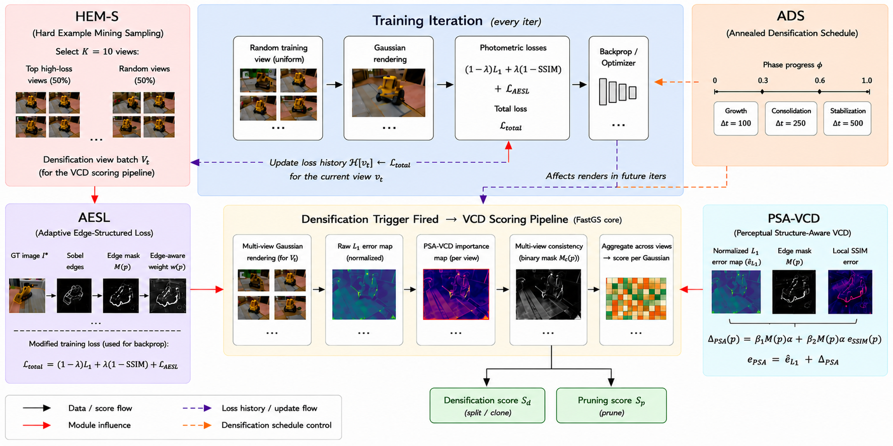

Side-by-side novel-view rendering on the kitchen scene from Mip-NeRF 360: Ground Truth (left) vs FastGS-Adaptive (Ours, right).
3D Gaussian Splatting (3DGS) has established itself as a leading representation for real-time novel view synthesis. Recent acceleration frameworks, such as FastGS have significantly reduced per-scene training time through multi-view consistent densification and pruning. However, FastGS employs a structure-agnostic $L_1$ error metric to guide densification. Specifically, the scoring head evaluates each pixel solely by photometric residual magnitude, without distinguishing residuals on geometric edges and those that arise on textureless surfaces. To address this limitation, we propose FastGS-Adaptive, a structure-aware densification framework that introduces four additive mechanisms: (1) an Adaptive Edge-Structured Loss (AESL) that modulates the photometric penalty using Sobel-derived gradient priors; (2) a Hard Example Mining Sampler (HEM-S) that replaces uniform camera selection with a loss-history-biased policy to focus densification capacity on under-reconstructed views; (3) an Annealed Densification Schedule (ADS) that decays the split frequency across three phases to eliminate late-stage overhead; and (4) a Perceptual Structure-Aware VCD score (PSA-VCD) that augments the $L_1$-based importance map with edge-weighted local SSIM error to bias split decisions toward perceptually salient regions. Experimental evaluation demonstrates that FastGS-Adaptive surpasses existing state-of-the-art acceleration methods on all three standard quality metrics while also rendering substantially faster at inference.
FastGS-Adaptive layers four additive modules onto the FastGS pipeline without modifying the CUDA rasteriser.

AESL (Adaptive Edge-Structured Loss) — modulates the per-pixel photometric penalty using a Sobel-derived edge mask $M(p)$ with weight $w(p) = w_{\min} + (\alpha - w_{\min})\,M(p)$.
HEM-S (Hard Example Mining Sampler) — replaces uniform view sampling with a 50%-high-loss / 50%-random policy driven by a per-camera loss history $\mathcal{H}[v]$.
ADS (Annealed Densification Schedule) — decays the split cadence with phase progress $\Delta t(\phi) \in \{100, 250, 500\}$ to eliminate late-stage overhead.
PSA-VCD (Perceptual Structure-Aware VCD) — augments the $L_1$-based importance map with edge-weighted local SSIM error, biasing split decisions toward perceptually salient regions.
Mip-NeRF 360 benchmark. Higher PSNR, SSIM, and FPS are better; lower LPIPS is better. The last row is our method, highlighted in blue.
| Method | PSNR ↑ | SSIM ↑ | LPIPS ↓ | $N_{\mathrm{GS}}$ | FPS ↑ |
|---|---|---|---|---|---|
| 3DGS | 27.53 | 0.812 | 0.221 | 2.63 M | 146 |
| Mini-Splatting | 27.32 | 0.821 | 0.217 | 0.53 M | 567 |
| Speedy-splat | 26.91 | 0.781 | 0.295 | 0.30 M | 552 |
| Taming-3DGS | 27.48 | 0.794 | 0.261 | 0.68 M | 221 |
| DashGaussian | 27.73 | 0.817 | 0.218 | 2.40 M | 155 |
| FastGS | 27.56 | 0.797 | 0.261 | 0.40 M | 579 |
| FastGS-Big | 27.93 | 0.820 | 0.216 | 1.15 M | 469 |
| FastGS-Adaptive (Ours) | 28.09 | 0.823 | 0.211 | 1.58 M | 689 |
FastGS-Adaptive achieves the best PSNR, SSIM, LPIPS, and FPS on the Mip-NeRF 360 benchmark.
Ground Truth (left) vs FastGS-Adaptive (Ours, right) on the kitchen scene.
Ground Truth (left) vs FastGS-Adaptive (Ours, right) on the bonsai scene.
Ground Truth (left) vs FastGS-Adaptive (Ours, right) on the bicycle outdoor scene.